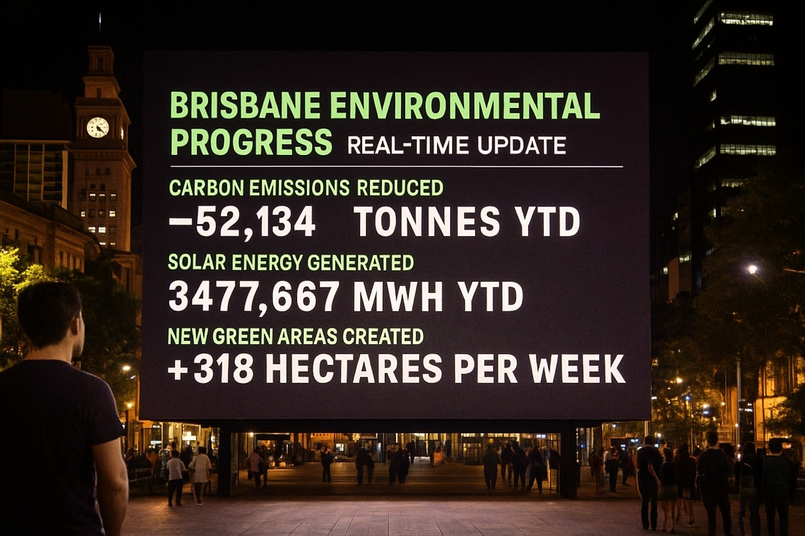
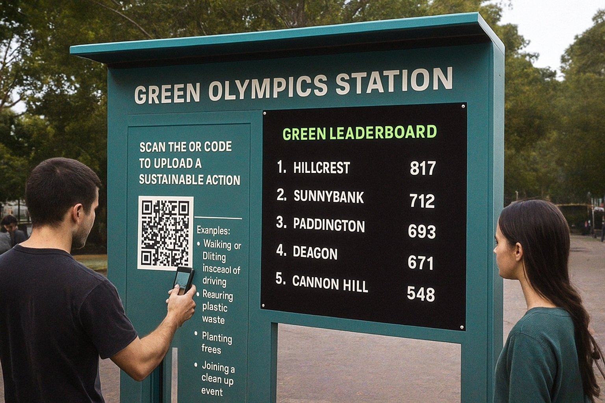

Introduction
The 2032 Brisbane Olympic Games will mark an important milestone for Queensland, not only as a sporting event but also as a test of how communication can bring people together for collective action. Brisbane has promised to host the world’s first Climate Positive Olympics, meaning its total carbon reductions will exceed its total emissions.
However, for many residents, this idea still feels distant or unclear. If people can’t see or feel the results, this promise could easily be viewed as “greenwashing.” To change this situation, the Queensland Government posted “Green Brisbane 2032: See it. Join it. Share it.” It is a communication project that turns an invisible policy into something people can see, join, and share.
See it — Making Sustainability Visible
In Brisbane’s Queen Street Mall, a large digital dashboard lights up the square. The screen shows real-time data about the city’s environmental progress — such as carbon reduction, solar power generation, and the number of new green zones added every week.
For people walking by, these changing numbers are more than just statistics. They are living proof that the city’s environmental goals are becoming reality. Every rise in renewable energy or drop in emissions represents a collective success.
“When data steps out of reports and into the streets, we can truly see change happening.”
Through this kind of visual communication, sustainability becomes something visible and real. The openness of the data also makes the government’s actions more credible. Public will take photos of the live dashboard and post them with hashtags like #ClimatePositiveBrisbane. In this way, even the act of seeing becomes a form of participation.
Join it — Turning Action into Participation
Green Olympic Stations have been set up in parks, transport hubs, schools, and shopping centers in Brisbane. At these interactive stations, residents can scan a QR code to upload their own eco-friendly actions, such as walking or cycling instead of driving, reducing plastic waste, planting trees, or joining a clean-up activity.
These actions are then shown on a Green Leaderboard, where people can see how different neighborhoods are helping achieve the Olympic sustainability goals.
“I saw my name on the leaderboard at the station screen — it felt great to know my small effort count.”
This system makes sustainability funnier and more social. Environmental responsibility becomes something enjoyable instead of a burden. Every small action added together, builds a sense of shared ownership and civic pride.
Conclusion — From Promise to Practice
According to See it, Join it, and Share it, the Green Brisbane 2032 campaign shows how communication can turn a slogan into everyday action. It connects policy with participation and builds transparency, collaboration, and trust, this is the foundations of a sustainable future.
And also this campaign combines digital tools, real-time carbon data, community involvement, and public storytelling to build trust and pride among Brisbane’s public. First, the open environmental data allows people to trust that the government’s promises are real and transparent. When the public can see progress with their own eyes, the relationship between the public and the government becomes more honest and equal. Second, the campaign creates a sense of pride by turning sustainability into a shared community achievement. When residents see their stories featured online, they feel personally connected to the city’s success and a contribution to Brisbane’s global image as a climate-positive city. These experiences strengthen the bond between residents and their city, showing that climate action is not only a duty but also a source of belonging and collective honor.
The Brisbane 2032 Olympics is no longer only about sports, it is also about how a city tells its story to the world. When data becomes visible, when people act together, and when their voices are heard, sustainability moves from aspiration to real change.
“We are not just watching the Olympics. We are building the legacy.”